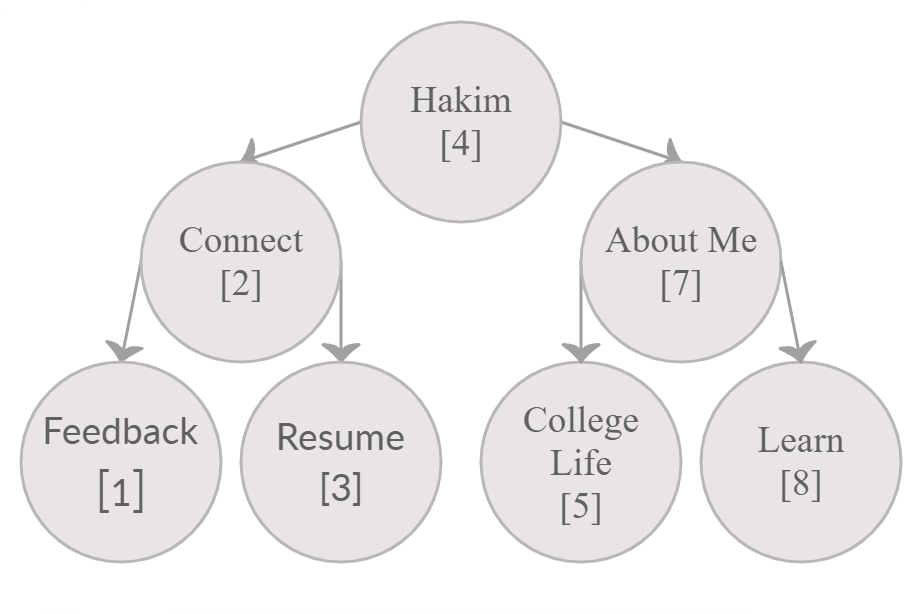

Hakim Fadzli
Welcome to my E-Portfolio
-I'm a Computer Science student. I am currently doing my diploma at Faculty of Computer and Mathematical Sciences at UiTM in Segamat Johor
in Computer Science. In the future I'm interested in futhering my studies in bachelor of statistics and subsequently Insyallah
my master in data science. Right now Im working on a few side projects and hobbies along side finishing my diploma.
Click the example Binary Tree below for navigation :

Binary Search Trees(BST)
- Notes from CSC248
- A binary search tree is a binary tree in which each element resides on a unique path from the root.
- Definition of BST:
- A binary search tree (t) is a binary tree such that either(t) is empty or
|
- Each element in leftTree is less than the root element of t.
- Each element in rightTree is reater than root element of t.
- Both leftTree and rightTree are binary search tree.
|